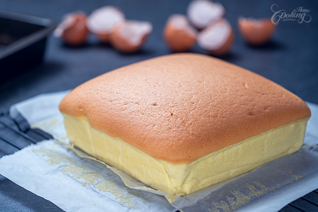

Hobbi
Sok mindent szeretek csinálni
| Sütni | Piskótán kívül semmit. |
|---|---|
| Főzni | Szeretek főzni de a pörköltön kívül nem nagyon tudok mást jól elkészíteni. |
| Enni | Amit tudok és szeretek azt megeszek. |
| Olvasni | Ha érdekel, vagy érdekes akkor könnyen eltudok veszni benne. |
| Aludni | Ki az aki nem szeret aludni? |
| Játszani | Általában LoL, vagy Valorant de ami elfut azzal is szívesen, igazából bármivel. |
Castella(Piskóta)
Összetevők:
- 80g tej
- 50g olaj
- 80g liszt
- 5 tojás
- 1 teáskanál vanília kivonat
- 80g cukor
Elkészítés

80g tejet és az 50g olajat egybe öntjük és tűzhelyen felmelegítjük. 80g lisztet beleszitálunk a már meleg tej-olaj keverékbe. 5 tojást felütünk és szétválasztjuk a sárgáját a fehérjétől.
A már elkevert liszthez hozzáadjuk az 5 tojás sárgáját, majd jól elkeverjük. Ezután 1 teáskanál vanília kivonatot adunk hozzá.
A tojásfehérjéhez hozzáadunk 80g cukrot majd habotkészítünk belőle. Ha már jó a hab akkor a tésztához keverhetjük óvatosan majd egy sütőpapírral kibélelt edénybe öntjuk. Ezt egy 150°C-ra előmelegített sütőben 1 óráig sütjük
Videó az elkészítéshez.